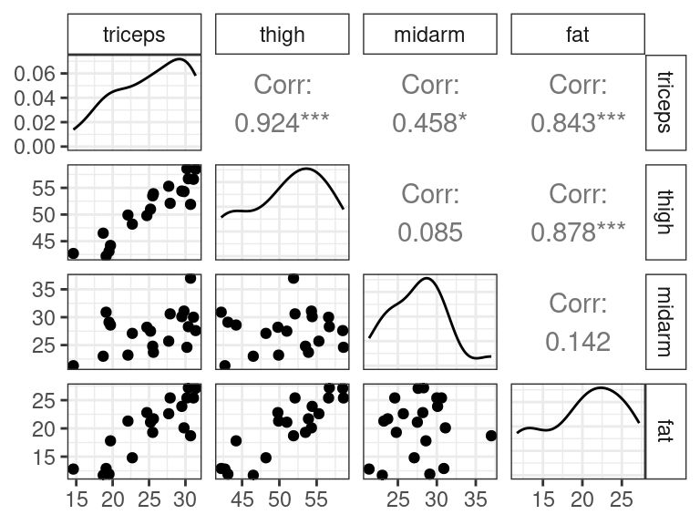
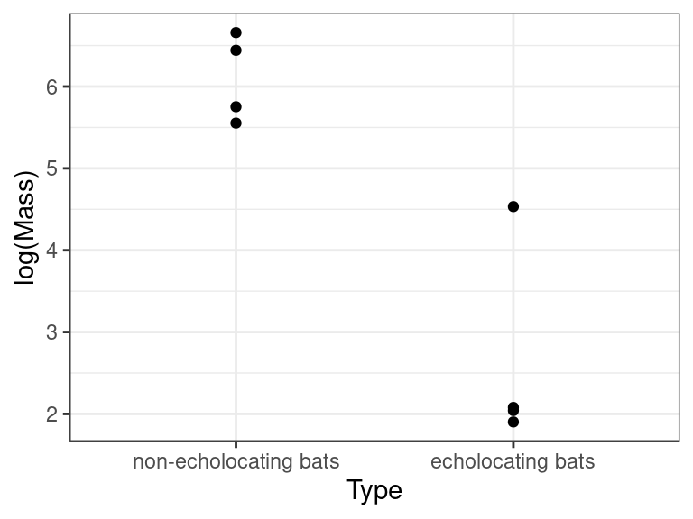

MLR: Practical Considerations
David Gerard
2022-09-21
Learning Objectives
- Choice of scaling predictors for interpretation.
- Multicollinearity
- Effect sizes, practical significance, and statistical significance.
- Chapter 12 from ROS
- Section 7.6 from KNNL
Scales
Interpretable Scales
Recall earnings data exploring the relationship between height and earnings.
library(tidyverse) library(broom) earnings <- read_csv("https://dcgerard.github.io/stat_415_615/data/earnings.csv") earnings <- mutate(earnings, height_mm = height * 25.4, height_in = height, height_mi = height / 63360) tidy(lm(earn ~ height_mm, data = earnings))## # A tibble: 2 × 5 ## term estimate std.error statistic p.value ## <chr> <dbl> <dbl> <dbl> <dbl> ## 1 (Intercept) -85027. 8861. -9.60 2.64e-21 ## 2 height_mm 62.8 5.23 12.0 5.42e-32tidy(lm(earn ~ height_in, data = earnings))## # A tibble: 2 × 5 ## term estimate std.error statistic p.value ## <chr> <dbl> <dbl> <dbl> <dbl> ## 1 (Intercept) -85027. 8861. -9.60 2.64e-21 ## 2 height_in 1595. 133. 12.0 5.42e-32tidy(lm(earn ~ height_mi, data = earnings))## # A tibble: 2 × 5 ## term estimate std.error statistic p.value ## <chr> <dbl> <dbl> <dbl> <dbl> ## 1 (Intercept) -85027. 8861. -9.60 2.64e-21 ## 2 height_mi 101056650. 8419609. 12.0 5.42e-32The estimated regression line depends on the units for \(X\) and \(Y\).
- earnings = -85,000 + 36 * height(millimeters)
- earnings = -85,000 + 1600 * height(inches)
- earnings = -85,000 + 101,001,000 * height(miles)
Does this mean that height in miles is a stronger predictor of earnings (since its coefficient estimate is larger?)
- NO! 🤦
- The scale of height was chosen arbitrarily. These three equations all reflect the same underlying information.
By itself, the size of the regression coefficients tells you nothing about the importance of a predictor because this coefficient can change if you change the units of the predictor.
Exercise: When exploring the effect of the percent of of the population with bachelor’s degrees and percent unemployment on percent below the poverty line in the County Demographic Information data, researchers obtained the following output:
cdi <- read_csv("https://dcgerard.github.io/stat_415_615/data/cdi.csv") cdi <- select(cdi, poverty, bachelors, unemployment) lmout <- lm(poverty ~ bachelors + unemployment, data = cdi) tidy(lmout)## # A tibble: 3 × 5 ## term estimate std.error statistic p.value ## <chr> <dbl> <dbl> <dbl> <dbl> ## 1 (Intercept) 7.83 1.15 6.80 3.56e-11 ## 2 bachelors -0.148 0.0303 -4.88 1.47e- 6 ## 3 unemployment 0.608 0.0992 6.13 1.97e- 9Which has a bigger effect on
poverty:bachelorsorunemploymentand why?You should choose a scale which is in the most interpretable units.
A 1 millimeter difference in height is not a meaningful difference, in terms of the distribution of human heights.
A 1 mile difference in height is unrealistic.
A 1 inch difference in height is more reasonable.
qplot(x = height_in, data = earnings, bins = 20)
You can use the standard deviation of the variables to help guide you. If the standard deviation is between 0.5 and 10, then you have a good scale. But this is a rough rule of thumb.
sd(earnings$height_mm)## [1] 97.33sd(earnings$height_in)## [1] 3.832sd(earnings$height_mi)## [1] 6.048e-05What if you are logging variables?
- Recall, we interpret log-relationships in terms of multiplicative changes. So being twice as tall is just as good in inches (84 inches versus 42 inches) as it is in miles (0.00133 miles versus 0.00066 miles).
- So choosing the units does not really matter.
- But choosing the size of the multiplicative difference is important (50% larger versus twice as large versus ten times as large, etc).
- E.g., there are very few humans who are twice as large as other humans. So a better multiplicative difference would be 1.05 (5% taller).
earnings <- mutate(earnings, log_height = log(height)) tidy(lm(earn ~ log_height, data = earnings))## # A tibble: 2 × 5 ## term estimate std.error statistic p.value ## <chr> <dbl> <dbl> <dbl> <dbl> ## 1 (Intercept) -425211. 37370. -11.4 5.03e-29 ## 2 log_height 106362. 8904. 11.9 1.03e-31Individuals that are 5% taller make \(106362 * \log(1.05) = \$5189\) more on average.
- You can choose a good multiplier by seeing if the standard deviation of the log of that base is between 0.5 and 10 (but this is a rough rule of thumb).
sd(log(earnings$height, base = 10)) # bad## [1] 0.02484sd(log(earnings$height, base = 2)) # bad## [1] 0.08253sd(log(earnings$height, base = 1.05)) # good## [1] 1.173sd(log(earnings$height, base = 1.01)) # good## [1] 5.749Exercise: A study was exploring the association between a country’s wine consumption (liters per person per year) and mortality rate (deaths per 1000 individuals). Researchers found that a power-law relationship was a fine approximation. Based on the below plot alone, choose a good multiplier to interpret the coefficient of a regression of log-mortality on log-wine. Verify your result using our rule of thumb above.
library(Sleuth3) data("ex0823") wine <- ex0823 qplot(x = Wine, y = Mortality, data = wine)
Exercise: World record mile time progressions from 1913 to 1999. Data are from Figure A.1 of ROS. Variables include
year: The date (in years) of the new world record.seconds: The new world record (in seconds).
mile <- read_csv("https://dcgerard.github.io/stat_415_615/data/mile.csv") glimpse(mile)## Rows: 32 ## Columns: 2 ## $ year <dbl> 1913, 1916, 1924, 1932, 1934, 1934, 1938, 1943, 1943, 1943, 19… ## $ seconds <dbl> 254.4, 252.6, 250.4, 249.2, 247.6, 246.8, 246.4, 246.2, 246.2,…The default scale of the \(X\) variable is in years. Is this the best scale? If not, transform the \(X\)-variable to a more appropriate scale, fit a regression of world record on year, then provide an interpretation for the slope.
Z-score scales
The idea behind using standard deviations is that roughly (i.e. generally only exactly if normal) 68% of observations will be within 1 standard deviation of the mean. So this difference represents something meaningful.
Above, I suggested to use standard deviations to guide your scaling. Alternatively, we could scale explicitly by standard deviations.
The \(Z\)-score for a variable is its value, minus its mean, divided by its standard deviation. \[ Z_i = \frac{X_i - \bar{X}}{s_x} \]
\(Z_i\) is now in units of standard deviations of \(X_i\) from its mean.
- \(Z_i = 1\) means individual \(i\) has an \(X_i\) value that is one standard deviation above the mean.
- \(Z_i = -1\) means individual \(i\) has an \(X_i\) value that is one standard deviation below the mean.
- \(Z_i = 2\) means individual \(i\) has an \(X_i\) value that is two standard deviations above the mean.
- etc
Example: For the heights and earnings dataset, let’s create \(Z\)-scores.
earnings <- mutate(earnings, height_z = (height - mean(height)) / sd(height), earn_z = (earn - mean(earn)) / sd(earn)) glimpse(select(earnings, earn_z, height_z))## Rows: 1,816 ## Columns: 2 ## $ earn_z <dbl> 1.28053, 1.72435, 0.39290, 0.17099, 1.28053, 1.81312, 1.32492… ## $ height_z <dbl> 1.9393, -0.1484, -0.6704, -0.4094, -0.9314, 0.3735, -0.9314, …Centering and scaling does not change the underlying information.
qplot(x = height, y = earn, data = earnings) + geom_smooth(method = "lm", se = FALSE)
qplot(x = height_z, y = earn_z, data = earnings) + geom_smooth(method = "lm", se = FALSE) But this will make interpretation a little easier.
But this will make interpretation a little easier.lm_earn_z <- lm(earn_z ~ height_z, data = earnings) tidy(lm_earn_z, conf.int = TRUE)## # A tibble: 2 × 7 ## term estimate std.error statistic p.value conf.low conf.high ## <chr> <dbl> <dbl> <dbl> <dbl> <dbl> <dbl> ## 1 (Intercept) 4.70e-16 0.0226 2.08e-14 1.00e+ 0 -0.0443 0.0443 ## 2 height_z 2.71e- 1 0.0226 1.20e+ 1 5.42e-32 0.227 0.316So a 1 standard deviation difference in height corresponds to 0.27 standard deviations higher earnings.
If you do this to all variables in your model, you can use the following multiple regression model: \[ Y_i = \beta_0^* + \beta_1^*Z_{i1} + \beta_2^* Z_{i2} + \cdots + \beta_{p-1}^*Z_{i, p-1} + \epsilon_i \]
If we run a linear regression under this model, then the interpretation of coefficient \(\beta_i^*\) is:
Individuals that are 1 standard deviation larger in \(X_i\) have \(\beta_1^*\) higher \(Y_i\) on average, adjusting for all other predictors in our model.
Note: If \(X_i^* = \frac{X_i - a}{b}\), then \(\beta_i^* = b\beta_i\) and \(\hat{\beta}_i^* = b\hat{\beta}_i\).
Exercise: Recall the portrait studio example where A portrait studio chain contains data on 21 cities (from Section 6.9 of KNNL). Variables include
young: The number of persons aged 16 or younger in the community (thousands of persons).disp: The per capita disposable personal income in the community (thousands of dollars).sales: Portrait studio sales in the community (thousands of dollars).You can load these data into R with:
portrait <- tribble(~young, ~disp, ~sales, 68.5, 16.7, 174.4, 45.2, 16.8, 164.4, 91.3, 18.2, 244.2, 47.8, 16.3, 154.6, 46.9, 17.3, 181.6, 66.1, 18.2, 207.5, 49.5, 15.9, 152.8, 52.0, 17.2, 163.2, 48.9, 16.6, 145.4, 38.4, 16.0, 137.2, 87.9, 18.3, 241.9, 72.8, 17.1, 191.1, 88.4, 17.4, 232.0, 42.9, 15.8, 145.3, 52.5, 17.8, 161.1, 85.7, 18.4, 209.7, 41.3, 16.5, 146.4, 51.7, 16.3, 144.0, 89.6, 18.1, 232.6, 82.7, 19.1, 224.1, 52.3, 16.0, 166.5)
Fit a linear model of sales (\(Y\)) on young (\(X_1\)) and disp (\(X_2\)). What are the coefficient estimates?
What would happen to the coefficient estimates of
younganddispif you converted the units ofdispto tens of thousands of dollars?Convert
dispto units of tens of thousands of dollars and rerun the regression. Did what you think would happen to the coefficient happen?What about if convert
dispto \(z\)-scores? What do you think would happen to theyoungcoefficient estimate? Verify your statement.Run a linear model by first converting
younganddispto \(z\)-scores. Interpret the coefficients.
\(Z\)-scores make the coefficients more comparable. However, the issues of multicollinearity (next section) still might make it hard to compare the importance of various predictors. This is because, e.g. in our portrait example, there might not be any cities that are 1 standard deviation higher in disposable income but have the same number of young folks.
Multicollinearity
Multicollinearity: Correlation between predictors.
In observational studies, multicollinearity is the rule, not the exception.
- In observational studies, you will always have some correlation between predictors.
- But too much correlation can be a really bad thing (how much is too much is calculated in Chapter 10).
The consequences of multicollinearity:
- Estimates of coefficients change based on what other predictors are in the model.
- Extra sums of squares change based on what other predictors are in the model.
- Standard errors are inflated.
- Fits and predictions and MSE are less affected.
- The significance of some predictors can be masked.
- Interpretation becomes more difficult.
We will demonstrate all of these issues through the body fat example with variables
- \(X_1\)
triceps: Triceps skinfold thickness. - \(X_2\)
thigh: Thigh circumference. - \(X_3\)
midarm: Midarm circumference - \(Y\)
fat: Body fat.
body <- read_csv("https://dcgerard.github.io/stat_415_615/data/body.csv") glimpse(body)## Rows: 20 ## Columns: 4 ## $ triceps <dbl> 19.5, 24.7, 30.7, 29.8, 19.1, 25.6, 31.4, 27.9, 22.1, 25.5, 31… ## $ thigh <dbl> 43.1, 49.8, 51.9, 54.3, 42.2, 53.9, 58.5, 52.1, 49.9, 53.5, 56… ## $ midarm <dbl> 29.1, 28.2, 37.0, 31.1, 30.9, 23.7, 27.6, 30.6, 23.2, 24.8, 30… ## $ fat <dbl> 11.9, 22.8, 18.7, 20.1, 12.9, 21.7, 27.1, 25.4, 21.3, 19.3, 25…- \(X_1\)
These data exhibit multicollinearity
library(GGally) ggpairs(data = body)
Notice that \(X_1\) = triceps and \(X_2\) = thigh are highly correlated with each other, but these are less correlated with \(X_3\) = midarm.
Let’s fit a bunch of models
lm_tr <- lm(fat ~ triceps, data = body) lm_th <- lm(fat ~ thigh, data = body) lm_tr_th <- lm(fat ~ triceps + thigh, data = body) lm_tr_th_m <- lm(fat ~ triceps + thigh + midarm, data = body)
Coefficient Estimates Change
select(tidy(lm_tr), term, estimate)## # A tibble: 2 × 2
## term estimate
## <chr> <dbl>
## 1 (Intercept) -1.50
## 2 triceps 0.857select(tidy(lm_th), term, estimate)## # A tibble: 2 × 2
## term estimate
## <chr> <dbl>
## 1 (Intercept) -23.6
## 2 thigh 0.857select(tidy(lm_tr_th), term, estimate)## # A tibble: 3 × 2
## term estimate
## <chr> <dbl>
## 1 (Intercept) -19.2
## 2 triceps 0.222
## 3 thigh 0.659select(tidy(lm_tr_th_m), term, estimate)## # A tibble: 4 × 2
## term estimate
## <chr> <dbl>
## 1 (Intercept) 117.
## 2 triceps 4.33
## 3 thigh -2.86
## 4 midarm -2.19- Coefficient estimates change based on what predictors are in the model.
| Variables in Model | \(\hat{\beta}_1\) | \(\hat{\beta}_2\) |
|---|---|---|
| \(X_1\) | 0.86 | - |
| \(X_2\) | - | 0.86 |
| \(X_1, X_2\) | 0.22 | 0.66 |
| \(X_1, X_2, X_3\) | 4.33 | -2.86 |
😱 Look how much they change!
Exercise: What is the model for each row in the above table?
We saw that \(X_1\) and \(X_2\) were highly correlated, so it makes sense that those coefficients change when they are included together in the model.
But \(X_3\) was not highly correlated with either \(X_1\) nor \(X_2\), so why did the coefficients change so much?
It turns out that, although \(X_3\) is not highly correlated with \(X_1\) and is not highly correlated with \(X_2\), it is highly correlated with the combination of \(X_1\) and \(X_2\).
We can measure the strength of the association between \(X_3\) and the combination of \(X_1\) and \(X_2\) by the multiple \(R^2\) value of regression of \(X_3\) on \(X_1\) and \(X_2\)
glance(lm(midarm ~ triceps + thigh, data = body))$r.squared## [1] 0.9904So, you cannot detect multicollinearity by just looking at pairwise correlations between predictors.
- Chapter 10 provides more sophisticated measures of multicollinearity.
Key Takeaway: a regression coefficient does not reflect any inherent effect of a particular predictor on the response, but only a marginal or partial effect given whatever other predictors are in the model.
Extra Sums of Squares Change
library(car)
Anova(lm_tr)## Anova Table (Type II tests)
##
## Response: fat
## Sum Sq Df F value Pr(>F)
## triceps 352 1 44.3 3e-06
## Residuals 143 18Anova(lm_tr_th)## Anova Table (Type II tests)
##
## Response: fat
## Sum Sq Df F value Pr(>F)
## triceps 3.5 1 0.54 0.474
## thigh 33.2 1 5.13 0.037
## Residuals 110.0 17Anova(lm_tr_th_m)## Anova Table (Type II tests)
##
## Response: fat
## Sum Sq Df F value Pr(>F)
## triceps 12.7 1 2.07 0.17
## thigh 7.5 1 1.22 0.28
## midarm 11.5 1 1.88 0.19
## Residuals 98.4 16Extra sums of squares will differ based on what other predictors are in the model
- \(SSR(X_1) = 352\)
- \(SSR(X_1|X_2) = 3.5\)
- \(SSR(X_1|X_2, X_3) = 12.7\)
Recall, the extra sum of squares is how much the error sum of squares is reduced when we include a predictor in a model with other predictors already in the model.
The extra sum of squares can increase or decrease depending on what other variables are in the model.
Key Takeaway: there is no unique sum of squares that can be ascribed to any one predictor as reflecting its effect in reducing the total variation in \(Y\) — this depends on what other predictors are in the model.
Standard Errors are Larger
select(tidy(lm_tr), term, std.error)## # A tibble: 2 × 2
## term std.error
## <chr> <dbl>
## 1 (Intercept) 3.32
## 2 triceps 0.129select(tidy(lm_th), term, std.error)## # A tibble: 2 × 2
## term std.error
## <chr> <dbl>
## 1 (Intercept) 5.66
## 2 thigh 0.110select(tidy(lm_tr_th), term, std.error)## # A tibble: 3 × 2
## term std.error
## <chr> <dbl>
## 1 (Intercept) 8.36
## 2 triceps 0.303
## 3 thigh 0.291select(tidy(lm_tr_th_m), term, std.error)## # A tibble: 4 × 2
## term std.error
## <chr> <dbl>
## 1 (Intercept) 99.8
## 2 triceps 3.02
## 3 thigh 2.58
## 4 midarm 1.60| Variables in Model | \(s\{\hat{\beta}_1\}\) | \(s\{\hat{\beta}_2\}\) |
|---|---|---|
| \(X_1\) | 0.13 | - |
| \(X_2\) | - | 0.11 |
| \(X_1, X_2\) | 0.30 | 0.29 |
| \(X_1, X_2, X_3\) | 3.02 | 2.58 |
Standard error increases as you include correlated predictors in the model.
Why? Consider the case of perfectly correlated variables where \(X_{i1} = X_{i2}\) for all \(i\). Then for an number \(a\) \[\begin{align} \hat{Y}_i &= \hat{\beta}_0 + \hat{\beta}_1X_{i1} + \hat{\beta}_2X_{i2}\\ &= \hat{\beta}_0 + (\hat{\beta}_1-a)X_{i1} + (\hat{\beta}_2 + a)X_{i2} \end{align}\]
So it is impossible to tell \(\hat{\beta}_1\) and \(\hat{\beta}_2\) apart.
We don’t know what effect to attribute to \(X_1\) and what to attribute to \(X_2\).
Fitted Values, Predictions, and MSE are Relatively Stable
The major issue with multicollinearity is that we can’t tell what effect comes from which predictor.
But the effect of multicollinearity on fitted values, predictions, and MSE is much more modest.
Confidence intervals for mean have about the same width (predictor levels chosen to have about the same mean estimate in each model)
df1 <- data.frame(triceps = 25) df2 <- data.frame(triceps = 25, thigh = 50) df3 <- data.frame(triceps = 25, thigh = 50, midarm = 28.8) predict(lm_tr, newdata = df1, interval = "confidence")## fit lwr upr ## 1 19.93 18.61 21.26predict(lm_tr_th, newdata = df2, interval = "confidence")## fit lwr upr ## 1 19.36 18.04 20.67predict(lm_tr_th_m, newdata = df3, interval = "confidence")## fit lwr upr ## 1 19.64 18.27 21Prediction intervals have about the same width
predict(lm_tr, newdata = df1, interval = "prediction")## fit lwr upr ## 1 19.93 13.86 26predict(lm_tr_th, newdata = df2, interval = "prediction")## fit lwr upr ## 1 19.36 13.83 24.88predict(lm_tr_th_m, newdata = df3, interval = "prediction")## fit lwr upr ## 1 19.64 14.21 25.07Residual standard deviation (square root of MSE) is about the same in all models
glance(lm_tr)$sigma## [1] 2.82glance(lm_tr_th)$sigma## [1] 2.543glance(lm_tr_th_m)$sigma## [1] 2.48Why? Consider the case of perfectly correlated variables where \(X_{i1} = X_{i2}\) for all \(i\). Then for an number \(a\) \[\begin{align} \hat{Y}_i &= \hat{\beta}_0 + \hat{\beta}_1X_{i1} + \hat{\beta}_2X_{i2}\\ &= \hat{\beta}_0 + (\hat{\beta}_1-a)X_{i1} + (\hat{\beta}_2 + a)X_{i2} \end{align}\]
The estimated mean value does not change no matter what value of \(a\) is provided (so predictions would also be robust to change).
This means the residuals would also not change no matter what value of \(a\) is provided (so the MSE would be more robust to change).
This is not to say that you should just include every predictor in the model. This is called “overfitting” and can cause bad issues (machine learning will discuss this).
- The point is just that predictions are more robust to issues of multicollinearity.
Masking Significance
The \(p\)-values for all three variables are all large, indicating a lack of evidence to include any of them.
tidy(lm_tr_th_m)## # A tibble: 4 × 5 ## term estimate std.error statistic p.value ## <chr> <dbl> <dbl> <dbl> <dbl> ## 1 (Intercept) 117. 99.8 1.17 0.258 ## 2 triceps 4.33 3.02 1.44 0.170 ## 3 thigh -2.86 2.58 -1.11 0.285 ## 4 midarm -2.19 1.60 -1.37 0.190But the overall \(F\)-test indicates strong evidence that we should include at least one of them:
glance(lm_tr_th_m)$p.value## value ## 7.343e-06The \(t\)-test for \(H_0: \beta_1 = 0\) compares the two models:
- \(H_0: Y_i = \beta_0 + \beta_2X_{i2} + \beta_3X_{i3} + \epsilon_i\)
- \(H_A: Y_i = \beta_0 + \beta_1X_{i1} + \beta_2X_{i2} + \beta_3X_{i3} + \epsilon_i\)
and if \(X_2\) is highly correlated with \(X_1\), and \(X_2\) is already in the model, then why do we also need to have \(X_1\) in the model?
The overall \(F\)-test compares the two models:
- \(H_0: Y_i = \beta_0 + \epsilon_i\)
- \(H_A: Y_i = \beta_0 + \beta_1X_{i1} + \beta_2X_{i2} + \beta_3X_{i3} + \epsilon_i\)
So this test says that we should have at least one of these variables in the model.
Key point: Just because the \(p\)-values from the \(t\)-tests are large does not mean that none of the predictors are associated with \(Y\).
The Difficulty of Interpretation
Sometimes, no data points exist that are one unit larger \(X_1\) but the same \(X_2\), because of multicollinearity. Thus, this interpretation is suspect.
Example: Researchers were interested in studying the association between energy expenditure (\(Y\)) on body mass (\(X_1\)) and echolocation type. Echolocation type is a categorical variable with levels “non-echolocating bats”, “non-echolocating birds”, and “echolocating bats”. The idea is that echolocation consumes a lot of energy, and so researchers were interested in if evolution found a way to correct for this, so that the sum of energy expenditure was not higher in echolocating bats than what would be expected based on their mass. You can load these data into R with
library(Sleuth3) data("case1002") echo <- case1002 glimpse(echo)## Rows: 20 ## Columns: 3 ## $ Mass <dbl> 779.0, 628.0, 258.0, 315.0, 24.3, 35.0, 72.8, 120.0, 213.0, 275… ## $ Type <fct> non-echolocating bats, non-echolocating bats, non-echolocating … ## $ Energy <dbl> 43.70, 34.80, 23.30, 22.40, 2.46, 3.93, 9.15, 13.80, 14.60, 22.…Since echolocation type is a categorical variable, we define two new indicator variables
\[\begin{align} X_{i2} &= \begin{cases} 1 & \text{ if individual $i$ is a non-echolocating bird}\\ 0 & \text{ otherwise} \end{cases}\\ X_{i3} &= \begin{cases} 1 & \text{ if individual $i$ is an echolocating bat}\\ 0 & \text{ otherwise} \end{cases} \end{align}\]
It turns out that the best model is one that includes a log-transformation on both energy and mass.
echo <- mutate(echo, l_energy = log(Energy), l_mass = log(Mass)) echo <- mutate(echo, Type = fct_relevel(Type, "non-echolocating bats", "non-echolocating birds", "echolocating bats"))The last line above changes the order of the factor levels so that non-echolocating bats are the reference level.
We then fit the model
\[ \log(Y_i) = \beta_0 + \beta_1\log(X_{i1}) + \beta_2X_{i2} + \beta_3X_{i3} + \epsilon_i \]
lm_echo <- lm(l_energy ~ l_mass + Type, data = echo) tidy(lm_echo, conf.int = TRUE)## # A tibble: 4 × 7 ## term estimate std.error stati…¹ p.value conf.…² conf.…³ ## <chr> <dbl> <dbl> <dbl> <dbl> <dbl> <dbl> ## 1 (Intercept) -1.58 0.287 -5.49 4.96e- 5 -2.19 -0.967 ## 2 l_mass 0.815 0.0445 18.3 3.76e-12 0.721 0.909 ## 3 Typenon-echolocating birds 0.102 0.114 0.896 3.84e- 1 -0.140 0.344 ## 4 Typeecholocating bats 0.0787 0.203 0.388 7.03e- 1 -0.351 0.508 ## # … with abbreviated variable names ¹statistic, ²conf.low, ³conf.highSo the fit is
\[ \hat{Y} = -1.58 + 0.82 X_1 + 0.11X_2 + 0.08X_3 \]
How do we interpret the 0.08 coefficient? Typically, we would say that “echolocating bats expend about 8.3% more energy (\(e^{0.08}\) = 1.083) than non-echolocating bats of about the same mass.”
However, there are no echolocating bats and non-echolocating bats of the same mass.
echo %>% filter(Type != "non-echolocating birds") %>% qplot(x = Type, y = l_mass, data = ., ylab = "log(Mass)")
This is an example of multicollinearity.
So this interpretation is suspect.
The best interpretation is to just say that we are adjusting for body size. E.g. “echolocating bats expend about 8.3% more energy (\(e^{0.08}\) = 1.083) than non-echolocating bats, adjusting for body size”.
What this means is that group differences are considered only after the best explanation for body size is taken into account.
Remedies for Multicollinearity
If it is not extreme (Section 10.5 of KNNL), don’t do anything. Just be cognizant of it.
Drop some of the correlated predictor variables.
Develop “composite” predictors that combine the correlated predictors.
- Do this manually.
- Use principal component analysis (PCA).
Apply ridge regression (Chapter 10).
OK, that sucked, but what about when there is no multicollinearity?
Researchers were studying the effect of work crew size (\(X_1\)) and level of bonus pay (\(X_2\)) on crew productivity (\(Y\)).
crew <- tibble::tribble( ~size, ~bonus, ~productivity, 4, 2, 42, 4, 2, 39, 4, 3, 48, 4, 3, 51, 6, 2, 49, 6, 2, 53, 6, 3, 61, 6, 3, 60 )sizeandbonusare both uncorrelated, by design.cor(crew$size, crew$bonus)## [1] 0Let’s fit these models:
lm_s <- lm(productivity ~ size, data = crew) lm_b <- lm(productivity ~ bonus, data = crew) lm_bs <- lm(productivity ~ bonus + size, data = crew)Notice that the estimated coefficients are unchanged when we add more predictors.
tidy(lm_s)## # A tibble: 2 × 5 ## term estimate std.error statistic p.value ## <chr> <dbl> <dbl> <dbl> <dbl> ## 1 (Intercept) 23.5 10.1 2.32 0.0591 ## 2 size 5.37 1.98 2.71 0.0351tidy(lm_b)## # A tibble: 2 × 5 ## term estimate std.error statistic p.value ## <chr> <dbl> <dbl> <dbl> <dbl> ## 1 (Intercept) 27.3 11.6 2.35 0.0572 ## 2 bonus 9.25 4.55 2.03 0.0885tidy(lm_bs)## # A tibble: 3 × 5 ## term estimate std.error statistic p.value ## <chr> <dbl> <dbl> <dbl> <dbl> ## 1 (Intercept) 0.375 4.74 0.0791 0.940 ## 2 bonus 9.25 1.33 6.97 0.000937 ## 3 size 5.37 0.664 8.10 0.000466The interpretation of the coefficients still changes based on what variables are in the model (controlling for the other predictor), but the effect size is estimated to be the same regardless.
Did you also notice that the standard errors did not get inflated?
The extra sums of squares are the same. That is \[ SSR(X_1) = SSR(X_1|X_2)\\ SSR(X_2) = SSR(X_2|X_1) \]
so the relative reduction in the variation in \(Y\) by including \(X_1\) is the same no matter if \(X_2\) is in the model.
Anova(lm_b)## Anova Table (Type II tests) ## ## Response: productivity ## Sum Sq Df F value Pr(>F) ## bonus 171 1 4.13 0.088 ## Residuals 249 6Anova(lm_s)## Anova Table (Type II tests) ## ## Response: productivity ## Sum Sq Df F value Pr(>F) ## size 231 1 7.35 0.035 ## Residuals 189 6Anova(lm_bs)## Anova Table (Type II tests) ## ## Response: productivity ## Sum Sq Df F value Pr(>F) ## bonus 171.1 1 48.5 0.00094 ## size 231.1 1 65.6 0.00047 ## Residuals 17.6 5Thus, it is relatively straightforward to determine if a variable should be included in a model, because this question may be answered without looking at other variables.
Conclusion: When designing an experiment, make sure your predictors are all uncorrelated.